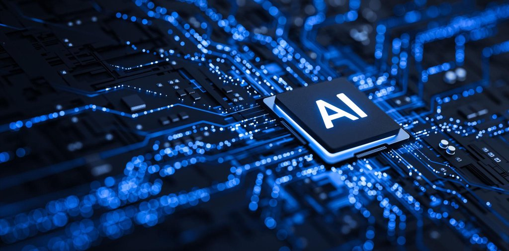

Yazılım geliştirme, elektrik ve yapay zekâ üzerine notlarım ve yazdıklarım.
Yazılım ·
Sıfırdan Projeye: Bir Yazılım Fikri Nasıl Ürüne Dönüşür?
Küçük bir fikirden çalışan bir yazılım ürününe uzanan geliştirme süreci.
Bir yazılım projesine başlamak çoğu zaman birkaç satır kod yazmaktan çok daha fazlasını gerektirir. Her şey genellikle küçük bir fikirle başlar. Ancak bu fikri çalışan, kullanılabilir ve sürdürülebilir bir ürüne dönüştürmek için planlama, araştırma ve sabır gerekir.
Her şey bir fikirle başlar
Bir projeye başlamadan önce çözmek istediğimiz problemi anlamamız gerekir. Çünkü yalnızca teknolojik açıdan ilgi çekici olması, bir fikrin başarılı bir projeye dönüşeceği anlamına gelmez.
İlk aşamada projenin amacını, hedef kitlesini ve hangi ihtiyaca cevap vereceğini belirlemek oldukça önemlidir. Bu aşama, geliştirme sırasında gereksiz özelliklerle zaman kaybetmenin de önüne geçer.
Doğru araçları seçmek
Projenin ihtiyaçlarına göre kullanılacak teknolojiler belirlenmelidir. Örneğin web tabanlı bir uygulama geliştirirken HTML, CSS ve JavaScript temel bir başlangıç sunarken daha kapsamlı projelerde React gibi kütüphaneler tercih edilebilir.
Bunun yanında Git ve GitHub gibi araçlar, kod değişikliklerini takip etmek ve proje geçmişini korumak açısından oldukça faydalıdır.
Burada önemli olan en popüler teknolojiyi kullanmak değil, projenin ihtiyaçlarına uygun araçları seçmektir.
Geliştirme süreci ve karşılaşılan sorunlar
Kod yazmaya başladığımızda her şeyin planlandığı gibi ilerlemesini bekleriz. Ancak gerçek geliştirme sürecinde hatalar, beklenmedik problemler ve değişen ihtiyaçlarla karşılaşmak kaçınılmazdır.
Bu noktada hata mesajlarını anlamak, araştırma yapmak ve problemi küçük parçalara ayırarak çözmek önemli beceriler arasında yer alır.
Yapay zekâ destekli araçlar da bu süreçte yardımcı olabilir. Ancak üretilen kodu anlamadan doğrudan projeye eklemek, ilerleyen aşamalarda daha büyük sorunlara neden olabilir.
Sonuç: Fikirden ürüne
Bir yazılım projesinin tamamlanması yalnızca kodların çalışması anlamına gelmez. Kullanıcı deneyimi, performans, güvenlik ve sürdürülebilirlik de değerlendirilmelidir.
Bana göre yazılım geliştirmenin en öğretici tarafı, başlangıçta yalnızca bir fikir olarak görünen bir şeyin zamanla çalışan bir ürüne dönüşmesini izlemektir. Her proje yeni bir problemle karşılaşmayı ve yeni bir şey öğrenmeyi sağlar.
Sonuçta iyi bir yazılımcı olmak yalnızca kod yazabilmek değil, karşılaşılan problemleri doğru analiz edip çözüm üretebilmektir.
Elektrik sistemleri artık yalnızca enerji üretimi ve dağıtımından ibaret değil. Otomasyon sistemleri, akıllı cihazlar ve endüstriyel kontrol teknolojileri sayesinde çok daha gelişmiş bir yapıya dönüşüyor. Yapay zekâ da bu dönüşümün önemli parçalarından biri olmaya başladı.
Örneğin üretim tesislerinde makinelerin çalışma verilerini analiz ederek olası arızaları önceden tespit etmek, enerji tüketimini optimize etmek veya üretim süreçlerini daha verimli hâle getirmek mümkün. Bunlar elektrik, yazılım ve yapay zekânın birlikte çalışabileceği alanlardan sadece birkaçı.
Basit bir örnek: bir motorun sıcaklık ölçümlerinde normalden sapan değerleri yakalayan kısa bir Python kodu. Gerçek sistemlerde bu kontrol, yapay zekâ modelleriyle çok daha akıllı hâle gelir; ama mantık aynıdır: PLC'den gelen veriyi oku, anormal olanı fark et, önlem al.
# Motor sıcaklığında ani sapmaları yakalayan basit kontrol
olcumler = [61, 62, 61, 63, 62, 74, 63] # °C, her dakika bir ölçüm
ortalama = sum(olcumler) / len(olcumler)
for dakika, sicaklik in enumerate(olcumler, start=1):
if sicaklik - ortalama > 8:
print(f"{dakika}. dakika: {sicaklik} °C — bakım ekibine uyarı!")
Ortalamadan 8 °C'den fazla sapan ölçüm "olası arıza" olarak işaretlenir.
Benim de ilerlemek istediğim yön tam olarak bu iki alanın kesişimi. Elektrik alanındaki bilgilerimi yazılım ve yapay zekâ ile birleştirerek özellikle endüstriyel otomasyon üzerine kendimi geliştirmek istiyorum.
Bence gelecekte yalnızca bir alanda bilgi sahibi olmak yeterli olmayacak. Farklı disiplinleri bir araya getirip gerçek problemlere çözüm üretebilmek çok daha değerli hâle gelecek. Ben de bu doğrultuda öğrenmeye ve kendimi geliştirmeye devam ediyorum.
Yapay Zekâ ·
Yapay Zekâ Günlük Hayatımızı Nasıl Değiştiriyor?

Günlük hayatın her katmanına yerleşen yapay zekâ teknolojileri.
Yapay zekâ, son yıllarda teknoloji dünyasının en çok konuşulan konularından biri hâline geldi. Eskiden yalnızca bilim kurgu filmlerinde karşılaştığımız teknolojiler, bugün günlük hayatımızın pek çok alanında aktif olarak kullanılıyor.
Üstelik bu değişim yalnızca teknoloji şirketlerini değil, eğitimden sağlığa, üretimden iletişime kadar birçok farklı alanı etkiliyor.
Günlük hayatın görünmeyen yardımcısı
Aslında yapay zekâyla düşündüğümüzden çok daha sık karşılaşıyoruz. İnternet platformlarının öneri sistemleri, telefonlarımızdaki sesli asistanlar, navigasyon uygulamaları ve otomatik çeviri araçları bunun en bilinen örnekleri arasında.
Bu sistemler, büyük miktarda veriyi analiz ederek kullanıcıların ihtiyaçlarına daha uygun sonuçlar sunabiliyor.
Özellikle üretken yapay zekâ araçlarının gelişmesiyle birlikte metin yazmak, görsel oluşturmak, kod geliştirmek ve araştırma yapmak çok daha erişilebilir hâle geldi.
Eğitim ve yazılım dünyasında yeni bir dönem
Yapay zekânın en dikkat çekici etkilerinden biri eğitim alanında görülüyor. Öğrenciler artık anlamadıkları konuları farklı şekillerde açıklatabiliyor, örnek sorular hazırlatabiliyor ve kişisel çalışma planları oluşturabiliyor.
Yazılım geliştirme tarafında ise yapay zekâ araçları kod önerileri sunabiliyor, hataları analiz edebiliyor ve geliştiricilerin daha hızlı çalışmasına yardımcı olabiliyor.
Ancak burada önemli bir ayrım var: Yapay zekâdan yararlanmak ile düşünme sorumluluğunu tamamen ona bırakmak aynı şey değil.
Bir konuyu gerçekten öğrenmek isteyen kişinin verilen cevapları sorgulaması, doğrulaması ve mantığını anlaması gerekiyor.
Peki riskler neler?
Her teknolojik gelişmede olduğu gibi yapay zekânın da bazı riskleri bulunuyor. Yanlış bilgi üretmesi, kişisel verilerin korunması, telif hakları ve otomasyon nedeniyle bazı iş alanlarının değişmesi bunların başında geliyor.
Ayrıca yapay zekâ tarafından üretilen içeriklerin her zaman doğru veya güvenilir olduğunu düşünmek ciddi hatalara yol açabilir.
Bu nedenle teknolojiyi bilinçli kullanmak ve eleştirel düşünme becerisini korumak her zamankinden daha önemli.
Gelecekte bizi neler bekliyor?
Yapay zekânın önümüzdeki yıllarda daha fazla sektöre entegre olması bekleniyor. Özellikle yazılım, otomasyon, robotik ve veri analizi alanlarında önemli gelişmeler yaşanabilir.
Bence gelecekte avantajlı olacak kişiler, yapay zekâyı bir rakip olarak görmek yerine onu doğru şekilde kullanmayı öğrenen kişiler olacak.
Teknolojinin gelişimini durdurmak mümkün değil. Önemli olan bu değişimi anlamak, ona uyum sağlamak ve insan olarak kendi düşünme ve üretme becerilerimizi geliştirmeye devam etmek.